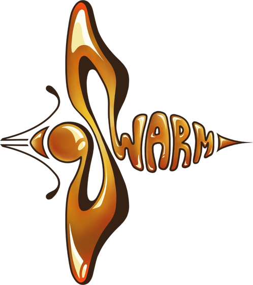
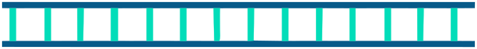

Worldwide
75%
of global food crop types depend on pollinators.


Bees help pollinate the crops that feed us.
Protecting honey bees means understanding what threatens them.
75%
of global food crop types depend on pollinators.
We’re designing short RNA guides for Varroa mites, which feed on bees and spread DWV. The aim is to reduce the proteins they need for feeding.
A guide helps the cell find and break down a matching RNA message. With fewer copies of that message, the cell can make less of the protein.
Inside a Varroa mite cell
Double-stranded RNA carries a sequence that matches the chosen gene. In the cell, an enzyme called Dicer recognizes this RNA and prepares to cut it.
Dicer cuts the long RNA into short pieces called small interfering RNAs, or siRNAs. These short sequences provide the guides. SWARM’s RNAi designs focus on this part of the process.
Argonaute, shown in pink, works with other proteins in the RNA-induced silencing complex, or RISC. It is the protein that can cut a matching RNA message.
RISC takes up an siRNA. Its sequence will determine which messenger RNA the complex recognizes. Messenger RNA carries the instructions a cell uses to make a protein.
The two RNA strands separate. The passenger strand is released, while the guide strand stays with Argonaute. This guide carries the sequence needed to find the target.
The guide pairs with a matching sequence on the mite’s messenger RNA. Choosing the right guide matters: it needs to recognize the intended mite message.
Argonaute cuts the matched message, which can then be broken down. Fewer intact messages can mean less of that protein. SWARM aims to use this effect to disrupt mite feeding.
Target the virus. Target the mite that spreads it.
Attach to the viral surface, then test whether that binding can prevent infection in bee cells.
Revisit the mechanismReduce selected mite gene messages, with the aim of disrupting the feeding that harms bees and spreads DWV.
Revisit the mechanismA treatment also has to work in a hive. Alongside the molecular designs, we’re developing protein-storage and feeding hardware, modeling delivery and binding, and learning from beekeepers and researchers.
How DWV and Varroa connect, and why SWARM addresses both.
Protein design, binding tests, RNA guide screening, and what we changed.

How conversations with researchers and beekeepers shape our targets and delivery plans.
The people building SWARM.